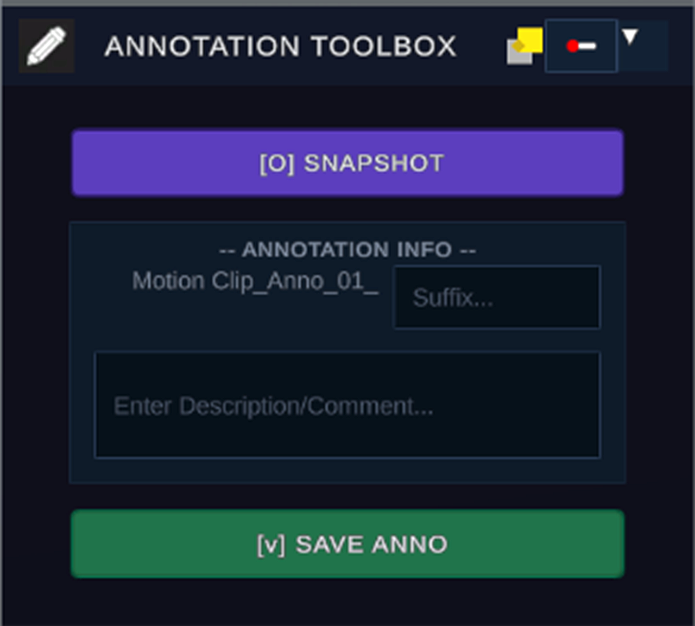

ANNOTATION
ANNOTATION ENGINE • KEYFRAME TAGGING
Mark every milestone.
Capture high-resolution keyframe snapshots, append descriptive metadata, and save structured coach commentary directly into the motion stream with single-key efficiency.

Single-Key Snapshot [O].
Never lose your place during intense video review sessions:
- Keyboard Keybinding [O]: Instantly freezes and snapshots the exact playback frame into memory.
- Auto-Indexed Identifiers: Sequentially generates unique IDs (e.g.
Motion Clip_Anno_01_) to streamline note-taking. - Frame Association: Metadata is mathematically anchored to the corresponding timeline sample.
Structured Commentary [V].
Communicate technical corrections clearly to students and patients:
- Custom Suffix Tags: Categorize takes with custom labels like "Apex_Angle" or "Early_Release".
- Descriptive Notes Box: Enter detailed paragraphs of coaching observations and biomechanical feedback.
- Direct Save [V]: Commit annotations with a single keypress, immediately reflected on the master timeline.
Toolbox Specifications
Snapshot Shortcut
[O] Key
Save Annotation Shortcut
[V] Key
Naming Taxonomy
Prefix + Index + Suffix
Metadata Format
Embedded .LSC Schema